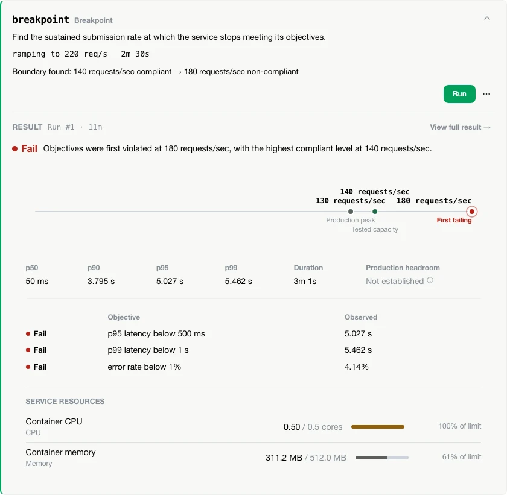

Cool, you ran a load test.
What did you actually prove?
The test gives you numbers. Vortex asks whether they mean anything.
Don’t just generate load. Prove capacity.
The paralysis of “it’s probably fine”
Production observed ~800 req/s at peak.
✓ TEST PASSED
The test passed. The conclusion didn’t.
The hard part was never running a load test.
It’s knowing what the test is supposed to prove.
Context in, evidence out.
Vortex pulls the pieces of a real performance question together, runs the experiment, and hands back what actually happened.
- OpenAPI spec
- Operations
- Production traffic
- Workload
- Objectives
- Execution target
- Resource limits
- Telemetry
- Tested throughput
- Latency
- Error rate
- Resource saturation
- Objective evaluation
- Run validity
- Capacity conclusion
- Local AI Interpretation
k6 executes the workload. Vortex owns the experiment.
Vortex brings the context around the test together so the result can answer more than whether requests succeeded.
Local-first by design: it runs on your machine, against your services. Your experiments and evidence stay with you.
See Vortex in action.
Real Vortex Workbench · Actual local execution
Turn traffic expectations, objectives, operations, and load into an explicit experiment.

A breakpoint test ramps until objectives stop holding, then reports the boundary — not just a pass or fail.

Understand capacity, objective breakpoints, resource limits, and whether the result itself is trustworthy.

How it works
From a spec and what production actually sees, to a verdict you can defend.
Your OpenAPI spec, parsed deterministically — no guessing.
Real production telemetry, pulled straight from Dynatrace over MCP.
Operations weighted into one Workload, with SLOs it has to hold.
p95 · p99 · error rateAsk in plain English. Vortex resolves the workload that answers it.
A preflight confirms it. Then k6 runs it, live.
Pass, fail, breakpoint, headroom — deterministic, first.
+ optional local AI interpretationEvery experiment is a file, not a memory.
Vortex writes what you built to .vortex/vortex.yaml in your
service’s own repo. Commit it, review it in a pull request — a teammate,
or CI, runs the identical experiment. Not their recollection of it.
Built on tools you already trust — not reinvented.
- OpenAPI
- k6
- Dynatrace
- Docker
- Ollama
Today, and where it’s going.
One experiment model. Different places to execute it.
Run Vortex.
Vortex ships as a single runnable jar. No installer, no account — download it, run it locally.
Ships as a jar today, so Java 25+ is required. A native binary — no JVM needed — is on the roadmap.
Early alpha. Vortex is actively evolving — see GitHub for current capabilities and roadmap.
AI optional. Evidence deterministic. Local AI can help interpret results, but never determines the verdict.
Open source under Apache-2.0. Don’t trust the verdict? Good — read the code.